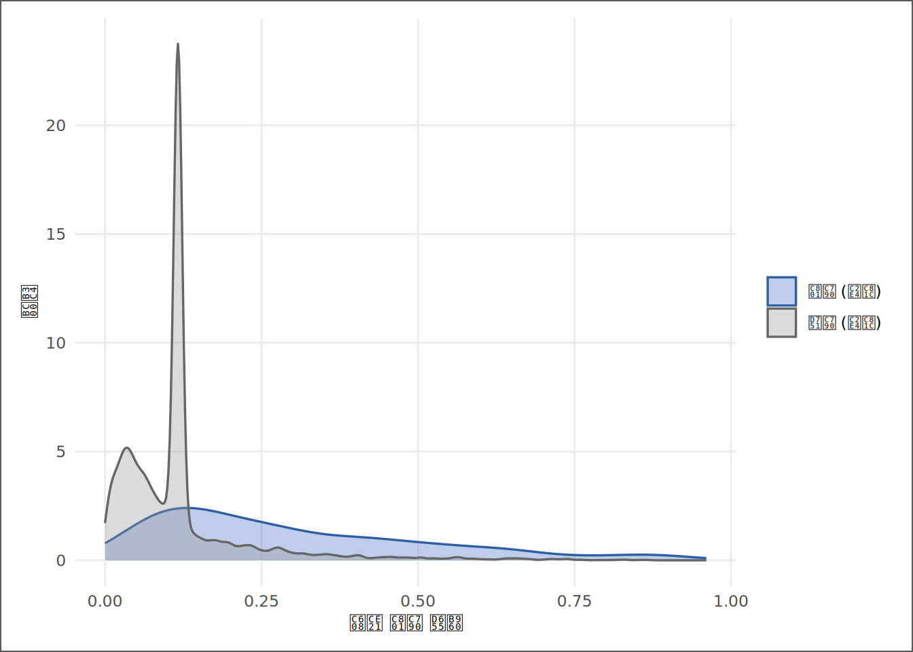
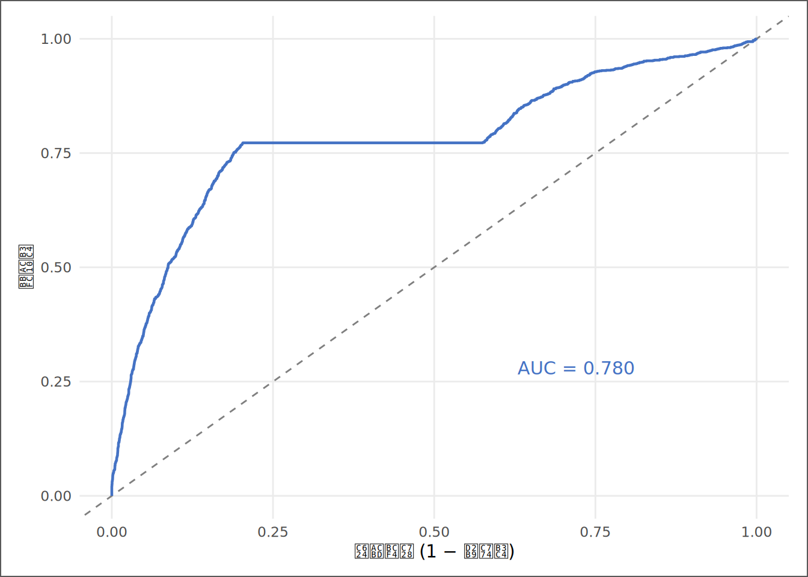

# | 키워드 | 한 줄 핵심 |
|---|---|---|
1 | 선형확률모형(LPM)의 한계 | 선형회귀로 0/1을 예측하면 확률 범위(0~1)를 벗어난 숫자가 나온다 |
2 | 로지스틱 함수(시그모이드) | 어떤 입력값도 0과 1 사이로 압축하는 S자 곡선 — 확률 예측의 수학적 기반 |
3 | 오즈(Odds)와 로그오즈(Log-Odds) | 로지스틱은 확률 대신 오즈의 로그를 선형으로 모형화한다 |
4 | 로지스틱 계수의 해석 — 방향과 오즈비 | 계수는 확률 변화가 아니라 로그오즈의 변화 — 확률로 직독하면 틀린다 |
5 | 혼동행렬과 분류 성능 | 예측이 맞은 경우를 유형별로 쪼개야 모형의 진짜 실력이 보인다 |
6 | 정확도의 함정 — 불균형 데이터 | 흑자 기업이 85%이면 '모두 흑자'로 찍어도 정확도 85% — 정확도는 함정이다 |
7 | 강건성 점검 — 표본 분할과 재추정 | 전반기 표본으로 만든 모형이 후반기에도 같은 방향의 결론을 내는가 |
예보관의 확률 — 로지스틱 회귀와 분류 성능
“예측의 가치는 맞는 횟수가 아니라, 틀리는 조건을 아는 데 있다.” — 통계적 결정이론의 교훈
사례로 시작하기
KG Asset의 리스크관리팀에 새 과제가 주어졌다. 다음 반기 보고 전에 편입 검토 중인 기업들의 적자 전환 가능성을 사전에 점수화해 달라는 요청이었다. 팀장이 원하는 것은 “A 기업이 적자로 갈 것 같다”는 정성적 판단이 아니었다. “기상청이 내일 강수 확률을 70%로 수치화하듯, 각 기업의 적자 전환 확률을 숫자로 보여줘라.”
신입 분석가 김자산은 10장에서 배운 선형회귀부터 들고 달려들었다. lm() 한 줄로 Loss_Dummy를 부채비율과 기업 규모로 설명하는 모형을 돌렸다. 그런데 결과 화면을 팀장에게 보여주는 순간 말문이 막혔다. 예측값 목록에 −0.03, 1.15 같은 숫자가 섞여 있었다. 팀장이 짧게 물었다. “강수 확률이 −3%인 예보가 있나?”
선형회귀는 0과 1 사이에 출력을 가두는 장치가 없다. 회귀선은 양 끝으로 무한히 뻗어나가지만 확률은 반드시 0에서 1 사이여야 한다. 온도계로 비가 올 확률을 재는 것과 같다 — 도구 자체가 틀렸다.
기상청은 이 문제를 S자 곡선으로 해결한다. 어떤 입력값 조합이 들어와도 출력을 0%와 100% 사이로 끌어당기는 함수다. 이 S자 곡선이 로지스틱 함수이고, 그것을 기반으로 한 모형이 로지스틱 회귀다. 로지스틱 회귀는 확률 자체를 직접 모형화하는 대신, 오즈의 로그(log-odds)를 선형으로 다루어 어떤 선형 조합값을 넣어도 반드시 0과 1 사이 확률이 출력되도록 설계되어 있다.
그러나 팀장의 요구는 확률 숫자를 받아내는 것만이 아니었다. 두 번째 질문이 기다리고 있었다. “이 모형, 장마철 표본에만 맞춘 예보 아닌가요? 한파 때도 같은 방향으로 경보를 내는지 확인해줘요.” 특정 기간의 데이터로 만든 모형이 다른 기간에도 같은 방향의 결론을 내는가 — 이것이 강건성(robustness) 점검의 핵심이다. 예보 시스템이 7월에만 작동하고 1월에 무너진다면, 그것은 예보관의 역량이 아니라 7월 날씨를 외운 것에 불과하다.
좋은 예보관이 7월 장마철 예보와 12월 한파 예보를 따로 검증하듯, 분석가는 모형이 어떤 기간에서, 어떤 변수 구성 아래서 버티는지를 스스로 먼저 시험한다. 그 시험을 통과한 결론만이 투자위원회 앞에 설 자격을 얻는다.
핵심 키워드
학습 목표
이 장을 마치면 다음 다섯 가지를 할 수 있다.
- 이진 종속변수에 선형회귀를 쓸 때 생기는 확률 범위 위반 문제를 설명하고, 로지스틱 함수가 이를 어떻게 해결하는지 직관적으로 설명할 수 있다.
- 로지스틱 계수를 로그오즈의 변화로 읽고, 방향(양/음)과 오즈비를 해석하되 “계수 = 확률 변화”라는 오독을 피할 수 있다.
- 혼동행렬에서 민감도·특이도를 계산하고, 정확도 단독 평가가 불균형 데이터에서 왜 위험한지 설명할 수 있다.
- AUC로 모형의 전반적 변별력을 평가하고 ROC 곡선을 해석할 수 있다.
- 표본 분할 방식으로 강건성을 점검하고, 결론이 살아남는지를 계수 방향 비교 표로 보고할 수 있다.
D→I→K→W 4단계 파이프라인
| 단계 | 이 장에서의 모습 |
|---|---|
| 데이터 (D) | 기업-연도 패널 — Loss_Dummy(적자 여부 0/1), Size(로그 자산), 부채비율_Win, ATO |
| 정보 (I) | 집단별 적자 비율 — “부채비율이 높은 기업의 적자 전환 비율이 더 높다” |
| 지식 (K) | 통제된 확률 예측 — “규모와 수익 창출력을 고정했을 때 부채비율이 적자 확률과 갖는 조건부 관계” |
| 지혜 (W) | 포트폴리오 리스크 관리 — “예측 확률 상위 기업을 조기 경보 목록에 올릴 근거가 있는가, 이 모형은 어떤 조건에서 신호를 믿을 수 있는가” |
데이터 출처와 수집
데이터 | 출처 | 핵심 변수 | 이 장의 역할 |
|---|---|---|---|
재무제표 패널 | DataGuide 5.0 (KOSPI·KOSDAQ 상장기업) | 자산총계, 부채총계, 당기순이익, 매출액(천원) | 종속변수 Loss_Dummy와 설명변수의 원천 |
파생 변수 | 3~5장에서 구축한 SSOT 파이프라인 | Loss_Dummy(적자 여부), Size(log 자산), 부채비율_Win, ATO | 정제된 분석 표본 — Winsorize 적용 완료 |
분석 표본은 3장에서 구축하고 4~5장에서 정제한 SSOT 데이터셋이다. 10장과 같은 데이터를 쓰는 이유는 앞 장과 같다 — 분석 단계마다 데이터가 바뀌면, 결과의 차이가 방법의 차이인지 데이터의 차이인지 구분할 수 없다.
직선 확률의 균열 — 선형확률모형의 한계
직관 — 온도계로 비 확률을 재는 문제
10장에서 배운 선형회귀는 연속형 종속변수를 위한 도구다. 종속변수가 0 또는 1만 취하는 이진형일 때 선형회귀를 그대로 쓰면 어떤 일이 생기는가?
선형확률모형(LPM)의 수식은 다음과 같다.
P(Loss_i = 1) = β0 + β1·Size_i + β2·LevWin_i + β3·ATO_i + ε_i문제는 오른쪽 항이 0과 1 사이에 있어야 한다는 보장이 전혀 없다는 점이다. 회귀선은 무한히 뻗어나가지만 확률은 0과 1 사이에 갇혀 있다. 규모가 매우 크거나 매우 작은 기업에서는 예측값이 음수이거나 1을 넘는 숫자가 등장한다. “내일 비 올 확률이 −12%”라는 예보는 정보가 아니라 오류다.
두 번째 문제는 이분산이다. 이진 결과에서 오차의 분산은 예측확률 p에 따라 p(1−p)로 달라진다 — 확률이 0.5에 가까울 때 분산이 크고, 0이나 1에 가까울 때 작아진다. 이는 선형회귀의 등분산 가정을 구조적으로 위반한다. 이진 결과를 선형으로 모형화하는 것은 온도계로 비 올 확률을 재는 것과 같다.
로지스틱 함수 — S자 곡선이 담장을 세운다
해결책은 S자 곡선이다. 로지스틱 함수는 어떤 실수도 0과 1 사이로 압축한다.
P(Loss = 1 | X) = 1 / (1 + exp(−(β0 + β1·X1 + ... + βk·Xk)))오즈(Odds)를 경유하면 수학이 선명해진다.
오즈 = P / (1 − P)
log(오즈) = β0 + β1·X1 + ... + βk·Xk ← 이것이 선형로지스틱 회귀는 확률 자체가 아니라 오즈의 로그(로그오즈, log-odds)를 선형으로 모형화한다. 이 변환이 담장을 세운다 — 어떤 선형 결합값도 로지스틱 함수를 통과하면 반드시 0과 1 사이로 들어온다.
계수 β1이 양(+)이면 X1이 증가할 때 로그오즈가 증가한다 — 즉 적자 확률이 높아지는 방향이다. 방향은 직접 읽힌다. 그러나 “크기” — X1이 1단위 증가하면 확률이 얼마나 변하는가 — 는 현재의 확률 수준에 따라 달라지므로, 계수를 그대로 확률 변화로 읽을 수 없다. 이것이 이 장의 첫 번째 함정이다.
오즈비(Odds Ratio) = exp(계수)는 계수의 크기를 해석하는 보조 도구다. 오즈비가 1이면 변화 없음, 1보다 크면 위험 증가, 1보다 작으면 위험 감소다. 평균 확률 수준에서의 기울기(한계효과)를 정밀하게 계산하는 것은 12장으로 넘기고, 이 장에서는 방향과 오즈비까지 다룬다.
실데이터 분석 ① — 적자 전환 확률 모형
먼저 분석 표본을 만든다.
# ① SSOT 데이터 적재
ssot_raw <- read_book_csv(ssot_path)
# ② 분석 표본: 필요한 변수만 고르고 결측 제거
logit_df <- ssot_raw |>
dplyr::transmute(
코드, 코드명, 회계연도,
Loss_Dummy,
Size,
부채비율_Win,
ATO
) |>
tidyr::drop_na(Loss_Dummy, Size, 부채비율_Win, ATO)
# ③ 표본 요약 (inline R 준비)
n_obs <- nrow(logit_df)
n_firms <- dplyr::n_distinct(logit_df$코드)
yr_min <- min(logit_df$회계연도)
yr_max <- max(logit_df$회계연도)
loss_rate <- mean(logit_df$Loss_Dummy)코드 읽기. 10장의 데이터 적재와 구조가 같다 — read_book_csv()로 불러서 transmute()로 필요한 변수만 고르고, drop_na()로 결측 행을 제거한다. 여기서 Loss_Dummy는 4장에서 당기순이익(천원) < 0으로 정의한 0/1 더미다. ③은 분석 전 표본의 구조를 미리 객체로 저장해 두는 단계 — 이후 본문 어디서든 10000 식으로 수치를 동적으로 참조하기 위해서다.
변수 | 평균 | 표준편차 | 최소 | 중앙값 | 최대 |
|---|---|---|---|---|---|
Loss_Dummy | 0.145 | 0.353 | 0.000 | 0.000 | 1.000 |
Size | 20.152 | 1.671 | 14.230 | 19.404 | 26.967 |
부채비율_Win | 0.437 | 0.170 | 0.081 | 0.395 | 0.906 |
ATO | 0.823 | 0.420 | 0.000 | 0.777 | 5.418 |
분석 표본은 2010년부터 2024년까지, 667개사의 기업-연도 관측치 10,000건이다. 이 가운데 적자(Loss_Dummy = 1)인 관측치의 비중은 14.5%다. 이 숫자가 분류 모형 설계에서 즉시 경보를 올려야 하는 이유는 이 장의 뒷부분에서 명확해진다.
이제 LPM과 로지스틱을 나란히 추정한다.
# ① LPM — 선형회귀로 이진 결과를 예측 (범위 이탈 확인용)
m_lpm <- lm(Loss_Dummy ~ Size + 부채비율_Win + ATO, data = logit_df)
# ② 로지스틱 — glm(family = binomial)이 S자 곡선을 적합
m_logit <- glm(Loss_Dummy ~ Size + 부채비율_Win + ATO,
data = logit_df, family = binomial)
# ③ LPM 예측값 중 확률 범위 이탈 건수
lpm_pred <- fitted(m_lpm)
n_out_of_range <- sum(lpm_pred < 0 | lpm_pred > 1)
lpm_min <- min(lpm_pred)
lpm_max <- max(lpm_pred)코드 읽기. ①은 lm() — 10장과 동일한 함수인데, 종속변수가 0/1이어서 문제가 생긴다. ②의 glm()이 일반화선형모형(Generalized Linear Model)이다. 차이는 단 하나, family = binomial이 붙는다. 이 옵션이 “이진 결과를 로지스틱으로 모형화하라”는 지시다 — R이 내부적으로 OLS 대신 최대우도추정(MLE)을 사용한다. ③은 LPM 예측값 중 0 미만이거나 1 초과인 건수를 센다 — LPM의 범위 이탈 문제를 숫자로 보여주는 절차다.
LPM 예측값의 최솟값은 -0.7207, 최댓값은 0.7114다. 전체 관측치 중 11.3%(1,129건)가 확률 범위를 이탈한다. 온도계가 “비 올 확률 −12%”라고 보여주는 상황이 1,129번 발생하고 있다.
두 모형의 계수를 나란히 정리한다.
변수 | LPM 계수 | LPM p값 | 로지스틱 계수(log-odds) | 로지스틱 p값 |
|---|---|---|---|---|
Size | -0.0240 | 0 | -0.2460 | 0 |
부채비율_Win | 0.6813 | 0 | 5.4121 | 0 |
ATO | -0.2036 | 0 | -2.4520 | 0 |
이어서 로지스틱 계수만 오즈비와 함께 정리한다. 오즈비는 exp(계수) — 계수가 0이면 오즈비 1(변화 없음), 양수이면 1보다 커서 적자 위험 증가, 음수이면 1보다 작아 위험 감소다.
변수 | 계수(log-odds) | 오즈비 | 표준오차 | z값 | p값 | 유의성 |
|---|---|---|---|---|---|---|
Size | -0.2460 | 0.7820 | 0.0202 | -12.19 | 0 | *** |
부채비율_Win | 5.4121 | 224.1127 | 0.1954 | 27.70 | 0 | *** |
ATO | -2.4520 | 0.0861 | 0.1126 | -21.78 | 0 | *** |
계수를 읽는 법을 하나씩 짚는다. Size 계수가 음(−)이므로, 기업이 클수록 적자 오즈가 낮아진다 — 오즈비 0.7820은 Size 1단위 증가 시 적자 오즈가 원래의 0.7820배로 감소한다는 의미다. 부채비율_Win 계수가 양(+)이므로, 부채비율이 높을수록 적자 오즈가 증가한다 — 오즈비 224.1127. ATO 계수가 음(−)이므로, 자산회전율이 높을수록 적자 오즈가 낮아진다 — 오즈비 0.0861. 수익 창출력이 높은 기업이 손실을 피한다는 직관과 일치한다.
계수 해석에서 반드시 멈춰야 할 자리가 있다. “부채비율_Win 계수 5.4121 = 부채비율 1단위 증가 시 적자 확률이 5.4121 증가”라는 문장은 틀렸다. 계수는 로그오즈의 변화이지 확률의 변화가 아니다. 확률이 0.1인 기업과 0.5인 기업에서 같은 변수가 1단위 변화할 때 확률 변화의 크기는 다르다 — S자 곡선의 기울기가 위치에 따라 다르기 때문이다.
예측확률의 분포를 보면 모형의 행동이 직관적으로 잡힌다.
# ① 예측확률 계산 및 집단 레이블 부여
pred_df <- logit_df |>
dplyr::mutate(
pred_prob = fitted(m_logit),
집단 = ifelse(Loss_Dummy == 1L, "적자 (실제)", "흑자 (실제)")
)
# ② 집단별 예측확률 밀도 플롯
ggplot2::ggplot(pred_df, ggplot2::aes(x = pred_prob, fill = 집단, color = 집단)) +
ggplot2::geom_density(alpha = 0.35, linewidth = 0.6) +
ggplot2::scale_fill_manual(
values = c("적자 (실제)" = "#4472C4", "흑자 (실제)" = "grey60")) +
ggplot2::scale_color_manual(
values = c("적자 (실제)" = "#2E5FA3", "흑자 (실제)" = "grey40")) +
ggplot2::labs(x = "예측 적자 확률", y = "밀도", fill = NULL, color = NULL) +
theme_book(11)
코드 읽기. ①에서 fitted(m_logit)은 각 관측치에 할당된 예측확률 벡터다. 로지스틱이므로 모든 값이 0과 1 사이에 있음이 보장된다 — LPM과의 차이가 여기서 가시적으로 드러난다. ifelse()로 실제 적자·흑자 레이블을 만든다. ②의 geom_density(alpha=)는 두 분포를 같은 축에 겹쳐 그린다. 두 봉우리가 잘 분리될수록 모형이 두 집단을 잘 구분한다는 뜻이다.
Checkpoint — 여기까지가 해석, 지금부터는 성능
여기까지 다룬 것: 로지스틱 함수의 구조, 계수의 방향(로그오즈 변화), 오즈비 해석, 예측확률 분포. 계수 해석은 여기서 끝이다. 지금부터 다루는 것은 별도의 질문이다 — 이 모형이 실제로 기업을 흑자와 적자로 얼마나 잘 분류하는가(성능). 두 질문은 독립적이다. 계수가 유의해도 분류 성능이 낮을 수 있고, 반대도 성립한다.
예보의 정확도 — 혼동행렬과 ROC
혼동행렬 — 예측을 네 칸으로 분해한다
모형이 “확률 0.5 이상이면 적자 예측”이라는 기준으로 분류할 때, 예측값과 실제값을 교차하면 네 경우가 생긴다.
# ① 0.5 기준 이진 분류
pred_class <- ifelse(fitted(m_logit) >= 0.5, 1L, 0L)
# ② 혼동행렬 (행: 예측, 열: 실제)
cm <- table(예측 = pred_class, 실제 = logit_df$Loss_Dummy)
# ③ 성능 지표 — 안전하게 이름으로 접근
get_cm <- function(cm, r, c) {
rn <- as.character(r); cn <- as.character(c)
if (rn %in% rownames(cm) && cn %in% colnames(cm)) cm[rn, cn] else 0L
}
TP <- get_cm(cm, 1, 1); FP <- get_cm(cm, 1, 0)
FN <- get_cm(cm, 0, 1); TN <- get_cm(cm, 0, 0)
accuracy <- (TP + TN) / sum(cm)
sensitivity <- if ((TP + FN) > 0) TP / (TP + FN) else NA_real_
specificity <- if ((TN + FP) > 0) TN / (TN + FP) else NA_real_
precision <- if ((TP + FP) > 0) TP / (TP + FP) else NA_real_코드 읽기. ①에서 ifelse()는 예측확률이 0.5 이상이면 1(적자 예측), 미만이면 0으로 바꾼다. 0.5라는 값은 임의의 출발점이지 유일한 답이 아니다 — 뒤에서 이 점을 ROC 곡선으로 다룬다. ②의 table(예측, 실제)가 혼동행렬을 만든다. ③은 그 네 칸에서 성능 지표를 계산한다 — TP(실제 적자를 적자로 맞춤), TN(실제 흑자를 흑자로 맞춤), FP(흑자인데 적자로 틀림), FN(적자인데 흑자로 틀림). 보조 함수 get_cm()은 특정 예측 결과가 하나도 없어 행·열이 없는 극단 경우를 안전하게 처리한다.
| 실제: 흑자(0) | 실제: 적자(1) |
|---|---|---|
예측: 흑자(0) | 8,375 | 1,191 |
예측: 적자(1) | 171 | 263 |
지표 | 계산식 | 값 | 의미 |
|---|---|---|---|
정확도(Accuracy) | (TP+TN)/전체 | 0.864 | 전체 중 맞춘 비율 — 불균형 데이터에서는 함정 |
민감도(Sensitivity) | TP/(TP+FN) | 0.181 | 실제 적자 기업 중 적자로 잡아낸 비율 — 리스크 관리의 핵심 |
특이도(Specificity) | TN/(TN+FP) | 0.980 | 실제 흑자 기업 중 흑자로 맞춘 비율 — 오경보 억제 |
정밀도(Precision) | TP/(TP+FP) | 0.606 | 적자 예측 중 실제 적자 비율 — 경보의 신뢰성 |
정확도 86.4%는 인상적으로 들릴 수 있다. 그러나 ’모두 흑자’로 찍는 무지성 모형의 정확도가 85.5%이므로, 이 모형이 기여한 정확도 향상은 0.9%p에 불과하다 — 정확도 단독 평가의 함정이다. 민감도 18.1%는 실제 적자 기업 중 절반도 잡지 못한다는 뜻이다 — 포트폴리오 리스크 관리 목적이라면 컷오프를 낮춰 민감도를 높이는 방향을 검토해야 한다. 포트폴리오 리스크 관리 맥락에서는 정확도보다 민감도가 더 중요한 경우가 많다 — 적자 기업을 흑자로 놓치는 비용(FN)이 흑자 기업을 오경보하는 비용(FP)보다 훨씬 크기 때문이다.
ROC 곡선 — 컷오프를 움직이며 성능을 본다
0.5라는 컷오프는 임의의 선택이다. 컷오프를 0에서 1까지 이동시키면서 민감도와 오경보율(1−특이도)의 쌍을 그리면 ROC 곡선이 된다. AUC(Area Under the Curve)는 그 면적이다 — 랜덤 모형은 0.5(대각선), 완벽한 모형은 1이다. 다만 이 장의 분류 성능은 모형을 적합한 것과 같은 표본(적합값) 위에서 계산한 값이다 — 표본외 일반화 성능은 별도의 검증(예: 연도 기준 분할)이 필요하다.
# ① ROC 객체 생성 (pROC)
roc_obj <- pROC::roc(logit_df$Loss_Dummy, fitted(m_logit),
quiet = TRUE, levels = c(0, 1), direction = "<")
auc_val <- as.numeric(pROC::auc(roc_obj))
# ② ggplot2용 ROC 데이터프레임
roc_df <- data.frame(
fpr = 1 - rev(roc_obj$specificities),
tpr = rev(roc_obj$sensitivities)
)
# ③ 시각화
ggplot2::ggplot(roc_df, ggplot2::aes(fpr, tpr)) +
ggplot2::geom_abline(slope = 1, intercept = 0,
linetype = "dashed", color = "grey50") +
ggplot2::geom_line(color = "#4472C4", linewidth = 0.8) +
ggplot2::annotate("text", x = 0.72, y = 0.28,
label = paste0("AUC = ", f3(auc_val)),
color = "#4472C4", size = 4) +
ggplot2::labs(x = "오경보율 (1 − 특이도)", y = "민감도") +
theme_book(11)
코드 읽기. ①에서 pROC::roc(실제값, 예측확률)이 ROC 분석을 수행한다. levels = c(0,1), direction = "<"은 “낮은 값이 음성(흑자), 높은 값이 양성(적자)”임을 명시하는 옵션이다. ②에서 specificities와 sensitivities 벡터를 x·y 좌표로 변환한다 — 1 − specificity가 오경보율이다. rev()가 순서를 뒤집어 x축이 0→1로 단조 증가하게 한다. ③에서 geom_abline(slope=1, intercept=0)이 랜덤 모형의 기준선(대각선)이다.
AUC 0.780는 ‘수용 가능’ 범위(0.70~0.80)에 있다 — 완벽하지 않으나 랜덤보다 구별력이 있다. ROC 곡선의 실용적 의미는 컷오프를 자유롭게 선택할 수 있다는 점이다. 리스크 관리 목적이라면 민감도를 높이는 낮은 컷오프를, 오경보 비용이 큰 상황이라면 특이도를 높이는 높은 컷오프를 쓸 수 있다. 0.5는 출발점이지 유일한 답이 아니다.
실데이터 분석 ② — 강건성 실연
예보가 빗나가는 조건을 먼저 찾아라
일기예보 모형이 7월에는 정확하지만 1월에는 빗나갈 수 있다. 분석 모형도 마찬가지다. 특정 시기의 표본으로 만든 모형이 다른 시기에도 작동하는가가 강건성(robustness)의 핵심 질문이다.
연도를 전반기와 후반기로 나눠 각각 재추정한다. 계수의 방향이 세 표본에서 일관되면 “방향의 강건성”이 있다고 볼 수 있다. 크게 달라지면 결론은 특정 기간의 산물일 가능성을 경보로 올려야 한다.
# ① 연도 중간값으로 전반기/후반기 분할
yr_med <- stats::median(unique(logit_df$회계연도))
df_early <- dplyr::filter(logit_df, 회계연도 <= yr_med)
df_late <- dplyr::filter(logit_df, 회계연도 > yr_med)
# ② 두 하위 표본에서 동일 모형 재추정
m_early <- glm(Loss_Dummy ~ Size + 부채비율_Win + ATO,
data = df_early, family = binomial)
m_late <- glm(Loss_Dummy ~ Size + 부채비율_Win + ATO,
data = df_late, family = binomial)
# ③ 세 모형 계수를 하나의 표로 수집
extract_rob <- function(m, label) {
broom::tidy(m) |>
dplyr::filter(term != "(Intercept)") |>
dplyr::transmute(
표본 = label,
변수 = term,
계수 = round(estimate, 4),
오즈비 = round(exp(estimate), 4),
p값 = round(p.value, 4)
)
}
rob_tbl <- dplyr::bind_rows(
extract_rob(m_logit, paste0("전체 (", yr_min, "–", yr_max, ")")),
extract_rob(m_early, paste0("전반기 (≤", yr_med, ")")),
extract_rob(m_late, paste0("후반기 (>", yr_med, ")"))
)코드 읽기. ①에서 median(unique(회계연도))는 고유한 연도의 중앙값을 분기점으로 삼는다 — 관측치 수가 많은 연도가 중앙을 당기지 않도록 먼저 unique()로 연도 목록을 만든다. ②는 같은 glm() 식을 두 부분 표본에 반복 적용한다. ③의 extract_rob() 함수는 broom::tidy()로 계수를 정돈하고 오즈비를 추가하는 작업을 세 번 반복하기 위해 추상화한 것이다 — 같은 절차를 세 번 복사·붙여넣기 하지 않고 함수로 만드는 것이 R다운 방식이다.
표본 | 변수 | 계수 | 오즈비 | p값 |
|---|---|---|---|---|
전체 (2010–2024) | Size | -0.2460 | 0.7820 | 0 |
전체 (2010–2024) | 부채비율_Win | 5.4121 | 224.1127 | 0 |
전체 (2010–2024) | ATO | -2.4520 | 0.0861 | 0 |
전반기 (≤2017) | Size | -0.2470 | 0.7812 | 0 |
전반기 (≤2017) | 부채비율_Win | 7.2746 | 1,443.2213 | 0 |
전반기 (≤2017) | ATO | -1.3909 | 0.2489 | 0 |
후반기 (>2017) | Size | -0.2961 | 0.7437 | 0 |
후반기 (>2017) | 부채비율_Win | 4.3526 | 77.6769 | 0 |
후반기 (>2017) | ATO | -2.8792 | 0.0562 | 0 |
[주의] 클러스터 수 점검. 이 강건성 점검의 분류 단위는 기업(코드 기준 667개사)이며, 전반기·후반기로 분할한 후 각 하위 표본에서 기업 수가 수십 개 미만으로 줄어들면 점근 이론 기반 표준오차가 불안정해질 수 있다 — 10장 클러스터 SE 점검과 동일한 원칙으로, 하위 표본 클러스터 수를 확인하고 소표본에서는 소표본 교정(CR2, wild cluster bootstrap)을 추가로 검토한다.
Size와 부채비율_Win의 계수 방향이 전체·전반기·후반기 모두에서 일치한다 — 방향의 강건성은 확보되었다. 다만 계수 크기의 기간 간 차이가 크다면, 두 기간 시장 구조 변화의 가능성을 한계로 명시해야 한다. 전반기 5,336건(적자비율 10.7%)과 후반기 4,664건(적자비율 18.9%)의 적자 빈도 차이도 계수에 영향을 줄 수 있다 — 이것이 연도 고정효과가 없는 로지스틱의 한계이며, 12장 인과추론으로 이어지는 질문이다.
분석가의 번역 — 확률 예보를 리스크 메모로
숫자 | 통계적 해석 | 실무 번역 |
|---|---|---|
적자 비율 14.5% | 표본 불균형 — 정확도 단독 평가 부적합 | '모두 흑자' 찍기도 85.5% 맞는 환경 — 민감도 중심 평가 필수 |
AUC 0.780 | 랜덤 대비 전체 컷오프 범위의 변별력 | 유의미한 분리 — 1차 조기 경보 필터로 활용 가능 |
민감도 18.1% | 실제 적자 중 경보 비율 | 적자 기업 절반도 못 잡음 — 컷오프 하향 조정 권고 |
특이도 98.0% | 실제 흑자 중 안전 확인 비율 | 오경보 낮음 — 불필요한 포지션 청산 최소화 |
Size 오즈비 0.7820 | Size 1단위 증가 시 적자 오즈 × 0.7820 | 대형 기업일수록 적자 리스크 낮음 — 규모 필터 근거 |
부채비율 오즈비 224.1127 | 부채비율_Win 1단위 증가 시 적자 오즈 × 224.1127 | 고부채 기업 조기 경보 근거 — 부채비율 임계값 설정 가능 |
강건성 결과 | 전·후반기 방향 일치 | 기간별 결론 일치 — 기간 특이성 낮음 |
완성 예시 — 리스크 경보 메모 전문
KG Asset 내부 리스크 경보 메모
제목. 적자 전환 조기 경보 모형 — 로지스틱 회귀 v1.0
결론. 세 변수(Size, 부채비율_Win, ATO)를 사용한 로지스틱 모형은 AUC 0.780로 랜덤보다 유의미한 변별력을 보인다 — 조기 경보 1차 필터로 활용 가능하나, 단독 최종 판단 도구로 쓰기에는 추가 검증이 필요하다.
모형 구조. Loss_Dummy를 Size, 부채비율_Win, ATO로 로지스틱 회귀 적합. 표본: 2010–2024년, 667개사, 10,000건. 적자 비율 14.5%.
성능. AUC 0.780. 0.5 컷오프 기준 민감도 18.1%, 특이도 98.0%. 적자 비율 14.5%이므로 정확도 단독 평가는 부적합 — 민감도와 AUC 중심으로 판단한다.
계수 해석. 부채비율_Win 계수가 양(+)이므로, 부채비율이 높을수록 적자 오즈가 증가한다 — 오즈비 224.1127. Size 계수가 음(−)이므로, 기업이 클수록 적자 오즈가 낮아진다 — 오즈비 0.7820은 Size 1단위 증가 시 적자 오즈가 원래의 0.7820배로 감소한다는 의미다. ATO 계수가 음(−)이므로, 자산회전율이 높을수록 적자 오즈가 낮아진다 — 오즈비 0.0861. 수익 창출력이 높은 기업이 손실을 피한다는 직관과 일치한다. 계수는 로그오즈의 변화이므로 확률로 직독하지 않는다.
강건성. 전반기(≤2017)와 후반기(>2017) 분할 재추정에서 주요 변수의 계수 방향이 유지되어, 기간 특이성이 낮다고 판단한다.
한계와 권고. 본 모형은 재무구조 세 변수만으로 적자를 예측하며, 지배구조·일회성 손실 등은 통제하지 못한다. 추가 검증으로 ① 연도 고정효과 포함 모형 ② Female_Ratio·is_esg_rated 추가(변수 추가 강건성) ③ 컷오프 민감도 분석을 권고한다.
R로 직접 해보기
| IPO | 내용 |
|---|---|
| Input | In_class_R/11주차/Derived_SSOT_Dataset.csv (3~5장 산출 SSOT) |
| Process | LPM 범위 이탈 확인 → 로지스틱 적합(glm) → 오즈비 표 → 혼동행렬 → ROC/AUC → 강건성(전반기/후반기 분할) → 리스크 경보 메모 |
| Output | Output/ch11_logit_coefficients.csv, Output/ch11_classification_perf.csv, Output/ch11_robustness.csv |
| Report | 리스크 경보 메모 1쪽 (본문 「완성 예시」 형식) |
난이도 | 분석 아이디어 | 확인 포인트 |
|---|---|---|
초심자 | 컷오프를 0.3과 0.7로 바꿔 혼동행렬을 다시 만들고, 민감도·특이도의 변화를 표로 정리한다 | 컷오프가 낮아질 때 민감도·특이도 중 무엇이 더 빠르게 변하는가 |
초심자 | Female_Ratio를 추가 변수로 넣고 Size·부채비율_Win·ATO의 계수가 어떻게 움직이는지 관찰한다 | 추가 변수의 계수 방향과 기존 계수의 이동 폭 — 좋은 통제인가 교란인가 |
초심자 | ATO 대신 ROA를 넣어 두 모형의 AUC를 비교하고 어느 변수가 적자 예측에 더 유용한지 판단한다 | AUC 차이의 경제적 의미 — 어느 변수가 실무적으로 더 유용한 경보 신호인가 |
고급자 | 연도를 한 해씩 제외하는 leave-one-year-out 강건성 점검을 설계하고 부채비율_Win 계수의 분포를 그린다 | 어떤 연도를 제외할 때 계수가 가장 크게 흔들리는가 — 그 연도의 맥락은 |
고급자 | is_esg_rated 추가 모형과 기본 모형의 AUC를 비교해 ESG 평가 여부의 예측력 기여분을 추산한다 | 표본 변화의 효과(ESG 기업만 남음)와 변수 자체의 기여를 분리하는 방법 |
AI 협업 프로토콜 — 모형을 먼저 무너뜨려라
수준 | 이 장의 행동 |
|---|---|
L1 (인식) | AI에게 'glm() 결과를 해석해줘'라고 결과표를 통째로 넘긴다 |
L2 (적용) | 변수 정의와 표본 구조를 제공하고 '오즈비 해석이 맞는지 확인해달라'고 요청한다 |
L3 (분석) | AI에게 '이 모형이 틀릴 수 있는 조건 3가지를 제시하고 각각을 어떻게 데이터로 점검할지 알려달라'고 한 뒤, 직접 강건성 코드를 짜서 확인한다 |
L4 (창의) | AI와 함께 표본 분할·변수 추가·대체 종속변수의 강건성 체계를 설계하고, 세 방향 모두에서 살아남은 계수 방향만 메모에 싣는다 |
[프롬프트 1 — 분석 전: 함정 사전 탐색] “Loss_Dummy를 Size, 부채비율_Win, ATO로 로지스틱 회귀할 때 예상되는 함정 세 가지를 제시하고, 각각을 어떻게 점검하면 되는지 알려줘. 단, 인과관계 표현은 쓰지 마.”
[프롬프트 2 — 분석 후: 강건성 시나리오 추가 요청] “전반기/후반기 분할 외에 이 모형의 강건성을 점검하는 방법 두 가지를 추가로 제안하고, 각각의 R 코드 개요를 알려줘. 이미 계획한 분석: 연도 분할.” AI가 제안한 방법 중 SSOT 데이터로 실행 가능한 것은 직접 코드를 짜서 확인하고, 불가능한 것은 메모의 한계 절에 기록한다.
| AI에게 맡겨도 되는 일 | 사람이 반드시 판단해야 하는 일 |
|---|---|
| glm 코드 오류 진단 | 어떤 변수를 넣을지 — 좋은 통제 vs 나쁜 통제 |
| 오즈비 계산 확인 | 계수를 확률로 직독했는지 자가 점검 |
| ROC/AUC 해석 초안 | 컷오프 결정 — 맥락의 리스크 비용 구조에 따라 다름 |
| 강건성 시나리오 아이디어 | 어떤 강건성 실패가 결론을 무너뜨리는지의 판단 |
| 보고서 문장화 초안 | 모형 한계의 정직한 공개와 그 범위 |
정리, 함정, 다음 장
예보 시스템이 완성됐다. 이 장의 판결을 한 문장으로 줄이면 이렇다. 로지스틱 회귀는 이진 결과를 확률로 번역하는 도구이고, 그 번역의 신뢰도를 검증하는 것이 강건성 점검이다. 좋은 예보관이 자신의 모형이 틀리는 조건을 아는 것처럼, 좋은 분석가는 계수가 뒤집히는 조건을 먼저 스스로 찾아야 한다.
이 장에서 10장의 진단 정신을 계승한다 — 10장이 회귀계수의 신뢰성을 잔차 진단과 강건 표준오차로 검증했다면, 이 장은 이진 결과 예측의 신뢰성을 분류 성능과 표본 분할 강건성으로 검증한다. 두 장을 이어 읽으면 분석 결과를 검증하는 사고의 공통 뼈대가 보인다.
많은 분석가들이 빠지는 함정 세 가지를 기억하라.
- 계수를 확률 변화로 직독한다. 로지스틱 계수는 로그오즈의 변화다. 방향만 직접 읽고, 크기는 오즈비나 특정 수준의 예측확률 비교로 보완한다.
- 불균형 데이터에서 정확도를 자랑한다. 흑자 기업이 많은 표본에서 “모두 흑자”로 찍으면 높은 정확도가 나온다. 분류 성능은 민감도·특이도·AUC를 함께 봐야 하며, 맥락에 따라 어떤 지표를 우선할지를 결정해야 한다.
- 강건성 점검 없는 단일 모형을 보고한다. 결론이 살아남는 조건과 무너지는 조건을 모두 보고하는 것이 정직한 분석이다. 강건성 실패는 숨길 부끄러움이 아니라 보고해야 할 정보다.
점검 항목 | 통과 기준 |
|---|---|
LPM 예측값에 범위 이탈(0 미만·1 초과)이 있는지 확인하고 건수를 보고했는가 | LPM 범위 이탈 건수 명시 (0건이어도 명시) |
로지스틱 계수를 방향으로만 읽고 확률 변화로 직독하지 않았는가 | 표 11.5 형식 — 오즈비 병기, '확률 변화' 표현 없음 |
혼동행렬에서 민감도·특이도를 정확도와 함께 보고했는가 | 표 11.6·11.7 형식 보고 |
표본 내 적자 비율을 확인하고 베이스라인 정확도를 명시했는가 | 베이스라인 정확도(1−적자비율) 명시 |
AUC로 전체 컷오프 범위의 변별력을 확인했는가 | 그림 11.2 형식 및 AUC 수치 보고 |
표본 분할 또는 변수 추가로 강건성을 한 가지 이상 점검했는가 | 표 11.8 형식으로 전체·하위표본 계수 방향 비교 |
분야 | 같은 구조의 질문 |
|---|---|
신용 리스크 | 대출 신청자의 부도 여부를 재무비율로 예측 — 정확도보다 부도 탐지율(민감도)이 핵심이다 |
의료 스크리닝 | 환자의 질병 여부를 검사 수치로 예측 — 오진(FN)과 과잉진단(FP)의 비용이 다를 때 컷오프는 의학적 판단이다 |
인사 분석 | 직원의 조기 이직 여부를 입사 데이터로 예측 — 예측 모형이 특정 채용 풀에 과적합되지 않았는지 강건성이 핵심이다 |
공공 정책 | 보조금 수혜 기업의 생존 실패 여부 예측 — 불균형(생존 기업 다수)과 선택편의(건실한 기업 우선 선정)가 동시에 작동한다 |
마케팅 | 고객의 이탈 여부를 사용 패턴으로 예측 — 이탈률이 낮으면 정확도 함정이 심각해지고, 고가값 고객은 표본이 작아 강건성이 흔들린다 |
이 장의 산출물(계수 표 ch11_logit_coefficients.csv, 분류 성능 표 ch11_classification_perf.csv, 강건성 비교 표 ch11_robustness.csv)은 13장 최종 보고서의 “리스크 절(Risk Section)”에 그대로 들어가는 부품이다. 그리고 “모형이 무너지는 조건” — 강건성이 확보되지 않는 하위표본이나 기간 — 은 “왜 이 기간에만?”이라는 새로운 연구 질문을 연다. 다음 장(12장)에서는 “관계가 있다”에서 “원인이 있다”로 넘어가는 문턱, 그리고 그 문턱을 넘기 위한 조건(반사실 사고, 시차 변수, 자연실험의 직관)을 다룬다. 김자산의 다음 임무는 “부채비율이 높아서 적자가 나는가, 적자가 날 것 같은 기업이 부채비율이 높아지는가”를 구분하는 일이다.
주차 PBL — 나만의 적자 경보 모형을 만들어라
이 장의 기술을 새로운 설계로 적용하는 것이 이번 주의 PBL이다. 본문에서는 Size·부채비율_Win·ATO로 Loss_Dummy를 예측했다 — PBL에서는 변수 선택과 강건성 설계를 직접 결정한다.
Context. 포트폴리오 리스크 위원회에서 질문이 들어왔다. “현재 모형에 여성 고용 비율(Female_Ratio)을 추가하면 조기 경보 성능이 개선되는가? 단순히 AUC가 오르는지 확인하는 것이 아니다 — 그 변수가 예측에 기여하는 이유가 재무적으로 설득력이 있는가를 함께 보고하라.” 변수 추가는 표본 변화(결측 제거)와 변수 자체의 기여를 분리해야 제대로 된 비교다. 이 분리 방법을 설계하는 것이 이번 PBL의 핵심 과제다.
| 단계 | 미션 | 핵심 |
|---|---|---|
| Level 1 (필수) | 본문 모형 재현 + 성능 표 작성 | Loss_Dummy ~ Size + 부채비율_Win + ATO, AUC·민감도·특이도 보고 |
| Level 2 (심화) | Female_Ratio 추가 모형 비교 | AUC 변화 + 계수 방향 + 표본 변화 여부 기록 |
| Level 3 (확장) | 강건성 1종 직접 설계·실행 | 전반기/후반기 외의 방식 1개(상장상태 분할·변수 제외·연도 1개 제외 등) + 설계 이유 명시 |
| Level 4 (도전) | 컷오프 민감도 분석 | 0.3·0.5·0.7 세 컷오프에서 민감도·특이도·정밀도 비교 표 및 컷오프 선택 근거 서술 |
제출물은 과목 표준 4종 — Input(데이터), Script(프롬프트 로그 포함 코드), Output(결과 로그·그림), Report(분석 보고서). 본문의 Script/ch11_logistic.R이 출발 코드다.
수행 가이드라인 (모범답안이 아니라 사고의 이정표다).
- AUC가 0.01 올랐다고 “모형이 개선됐다”고 쓰지 마라. 혼동행렬에서 실제로 추가로 잡힌 적자 기업이 몇 건인지를 함께 쓰라 — 그것이 의사결정에 쓰이는 언어다.
- Female_Ratio를 넣기 전에, 이 변수가 적자와 연결되는 이유를 한 문장으로 써라. “회귀해봤더니 유의하게 나왔다”는 분석이 아니라 낚시다.
- 강건성 점검을 직접 설계할 때는 “이 분할/제외를 선택한 이유”를 먼저 써라 — 설계 근거 없는 강건성 점검은 검증이 아니라 탐색이다.
- 컷오프 결정은 맥락의 문제다. “리스크 관리 목적에서 민감도 우선인가, 오경보 비용이 크다면 특이도 우선인가” — 이 판단을 먼저 쓰고 컷오프를 선택하라.
- Level 2에서 Female_Ratio 추가 전후의 표본 크기를 반드시 확인하라. Female_Ratio에 결측이 있다면 표본이 줄고, AUC 변화가 변수의 기여인지 표본 변화의 기여인지 구분할 수 없다. 같은 표본에서 두 모형을 비교하는 방법을 설계하라.
- 결론이 “Female_Ratio 추가가 AUC를 개선하지 않았다”여도 정직한 보고다. 결론보다 근거의 투명성이 평가 기준이다.
채점 루브릭 (100점).
| 평가 항목 | 배점 | 통과 기준 |
|---|---|---|
| 재현성 | 20 | 데이터 경로·스크립트·패키지·표본 수가 명시되어 그대로 재실행 가능 |
| 분류 성능 해석 | 30 | 정확도 단독 평가 없이 민감도·특이도·AUC 병기, 불균형 데이터 함정 인식 |
| 강건성 점검 | 25 | 본문 방식 외 1종 이상 직접 설계·실행, 계수 방향 일치 여부 보고 |
| 의사결정 번역 | 25 | 리스크 위원회 질문에 직접 답하고 컷오프 결정의 근거를 맥락과 함께 제시 |
이 장의 자료
- 데이터:
In_class_R/11주차/Derived_SSOT_Dataset.csv(3~5장 SSOT 파이프라인 산출) - 전체 스크립트:
Script/ch11_logistic.R(본문 코드 전체 — Script 폴더에서 실행) - 산출물:
Output/ch11_logit_coefficients.csv,Output/ch11_classification_perf.csv,Output/ch11_robustness.csv
AI 협업 권장. glm() 결과에서 “fitted probabilities numerically 0 or 1” 경고가 나오면 완전 분리(perfect separation) 문제다 — 오류 메시지와 표본 구조를 제공하고 “이 경고의 원인과 대응”을 요청하라. AUC 해석이 막히면 “AUC 0.780이 이 분석 맥락에서 좋은 이유와 나쁜 이유를 각각 설명해줘”처럼 조건부 해석을 요구하라.
AI 사용 시 주의 3가지. (1) AI는 계수를 종종 “확률 변화”로 해석한다 — 메모에 옮기기 전에 로그오즈 표현으로 교정하라. (2) AI가 제안하는 추가 변수에는 결과 변수로 가는 경로 위의 것(bad control)이 섞일 수 있다 — 넣기 전에 이론적 위치를 점검하라. (3) AUC가 개선됐다고 AI가 “모형이 더 좋아졌다”고 단언하면 의심하라 — 표본이 달라진 효과가 없는지 먼저 확인하라.
연습문제
문제 1. 어떤 분석가가 Loss_Dummy를 부채비율_Win에 단변량 로지스틱 회귀해 계수 0.008을 얻었다. “부채비율이 1단위 증가하면 적자 확률이 0.8%p 증가한다”고 보고했다. 이 문장의 어디가 틀렸는가? 올바른 해석을 제시하라.
모범답안. 로지스틱 계수 0.008은 로그오즈의 변화이지 확률의 변화가 아니다. “0.8%p 증가”는 선형확률모형의 계수 읽기 방식을 로지스틱에 그대로 적용한 오독이다. 올바른 1차 해석은 “부채비율이 1단위 증가할 때 적자 오즈가 exp(0.008) ≈ 1.008배로 증가한다”이다. 확률 변화의 크기는 현재 확률 수준에 따라 달라지므로, 기술하려면 두 대표 수준(예: 부채비율 50 vs 150)에서의 예측확률 차이를 제시하거나, 평균 확률 수준에서의 한계효과를 별도로 계산해야 한다.
문제 2. 전체 표본 중 적자 기업이 8%인 데이터셋에서 로지스틱 모형을 돌렸더니 정확도가 91%였다. 이 모형이 실제로 유용한지 판단하기 위해 필요한 추가 지표 두 가지를 제시하고, 각각이 왜 필요한지 설명하라.
모범답안. (1) 민감도(Sensitivity): 실제 적자 기업 중 몇 퍼센트를 적자로 예측했는가. 나이브 베이스라인 — “모두 흑자”로 찍기 — 의 정확도가 이미 92%이므로, 정확도 91%는 베이스라인보다 낮은 모형일 수 있다. 민감도가 무작위(≈8%)보다 유의미하게 높을 때만 모형이 존재 이유를 갖는다. (2) AUC: 0.5 컷오프에만 의존하지 않고, 모든 컷오프에서의 변별력을 종합 평가한다. AUC가 0.5에 가깝다면 랜덤과 다르지 않다. 두 지표 모두 베이스라인보다 유의미하게 높을 때 비로소 “유용한 모형”이라 할 수 있다.
문제 3. 전반기(2011~2016년)로 추정한 로지스틱 모형에서 부채비율_Win 계수가 양(+)이었는데, 후반기(2017~2022년)에서는 음(−)으로 나왔다. 이 결과를 어떻게 해석하고 보고해야 하는가?
모범답안. 두 기간에서 계수 방향이 반대라는 것은 “부채비율과 적자 여부의 조건부 관계”가 표본 기간에 민감하게 의존한다는 신호다. 전체 표본의 단일 계수를 유일한 진실로 보고하는 것은 위험하다. 보고서에는 ① 강건성 점검 결과를 표로 명시하고, ② 결론을 “전반기에는 양, 후반기에는 음의 조건부 관계가 관찰되며, 두 기간의 시장 환경 또는 대출 구조 변화가 작용했을 가능성이 있다”는 유보적 서술로 제한한다. ③ 최종 판단은 이 모형 단독에 의존하지 않고, 추가 기간 또는 추가 변수를 통한 재검증 후에 내릴 것을 권고한다.
문제 4 (강건성의 설계). 연구자가 “Loss_Dummy ~ Size + 부채비율_Win + ATO 로지스틱 모형은 강건하다”고 주장하면서 단 한 가지 점검(전반기/후반기 분할)만 제시했다. 이 주장의 한계를 지적하고, 추가로 실행할 수 있는 강건성 점검 두 가지를 SSOT 데이터 변수를 명시하며 제안하라.
모범답안. 단일 강건성 점검은 시간 차원의 일관성만 확인한다. 한계: (1) 상장 유지/폐지 집단 간 구조 차이(정상 vs 상장폐지)를 반영하지 않는다. (2) 설명변수 구성 변화에 대한 민감성을 검증하지 않는다. 추가 강건성 점검: ① 상장상태 분할 — dplyr::filter(상장상태 == "정상")와 dplyr::filter(상장상태 == "상장폐지")로 각각 추정해 계수 방향이 일치하는지 확인한다. 두 집단(정상·상장폐지)은 생존 여부에서 구조가 다를 수 있으므로, 일치하면 결론의 보편성이 높아진다. ② Female_Ratio 추가 모형 — Female_Ratio를 추가 통제변수로 넣어 Size·부채비율_Win·ATO의 계수 방향이 유지되는지 확인한다. 계수가 안정적이라면 기존 세 변수의 조건부 관계는 Female_Ratio와 무관하게 작동한다는 추가 근거가 된다.